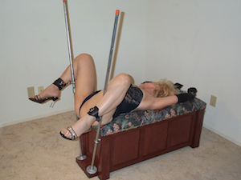

Pandora's Chest
It's a lovely Hope Chest - and versatile play station.
Pandora's Chest is available in two styles - Mission style as shown on the images on this page, and Raised Panel style as you can see on the Gallery page. The free plans include all the information needed to build either style.
Pandora’s Chest is a traditional linen chest that converts to a kneeling bench, pelvic exam bench, or bent-over crossbar. Each play position is easily assembled in a few minutes without tools, and disassembled back to its everyday form. And back to play just as easily. Pandora’s Chest is 20" tall (26” including optional bolsters), 44” wide, and 18” deep. The linen storage area is approximately 4 cubic feet, making Pandora’s Chest practical for everyday use and display - in plain sight!
Converting from Hope Chest to play station.
Pandora's Chest is easy to use. Click on the left and right arrows on the slide show to see some examples!
The optional Bolsters easily detach from the chest lid by unscrewing the knobs. Once detached, their brackets fit into the chest body at the ends or front to give your playmate something comfortable to kneel upon. Comfy for hard floors!
Steel Outriggers hold the legs vertically in the “pelvic exam” position. They also hold the Crossbar in the bent-over position. For play, the Outrigger halves screw together, pass through an eyebolt, and are inserted into a Retaining block.

Starts as innocent Hope Chest

Parts in secret drawer,

Eyebolts for restraint points or outrigger guides,

Use bolsters for kneeling pads.

Install receiving block for outriggers,

Assemble outriggers,

Slide each outrigger thru eyebolt into receving block.

Outriggers can be used to spread legs high,

or low.

Attach cross bar to outriggers for bent over position.